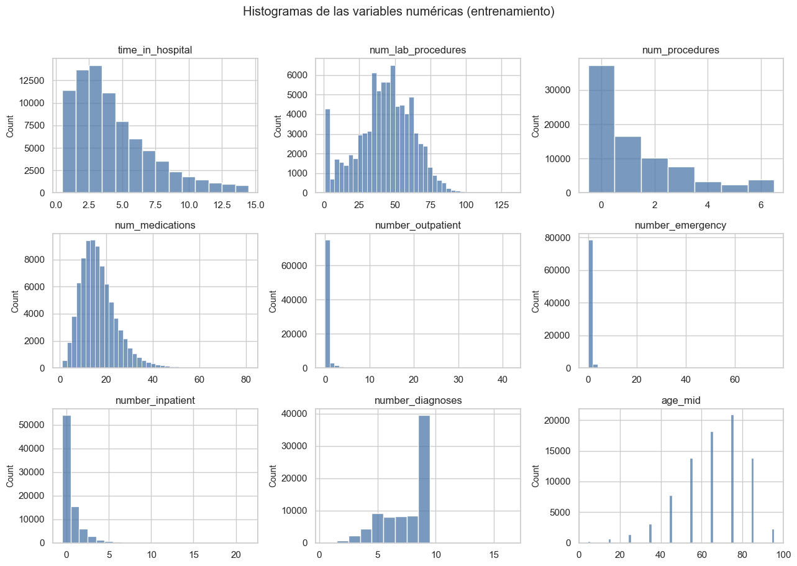
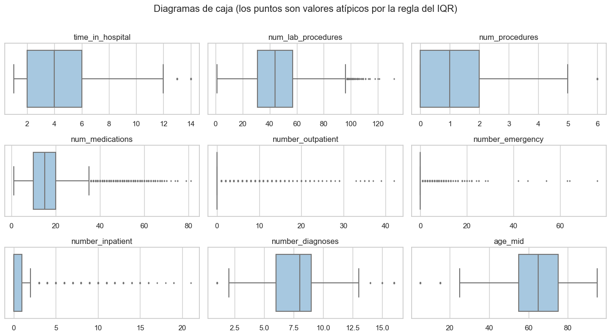
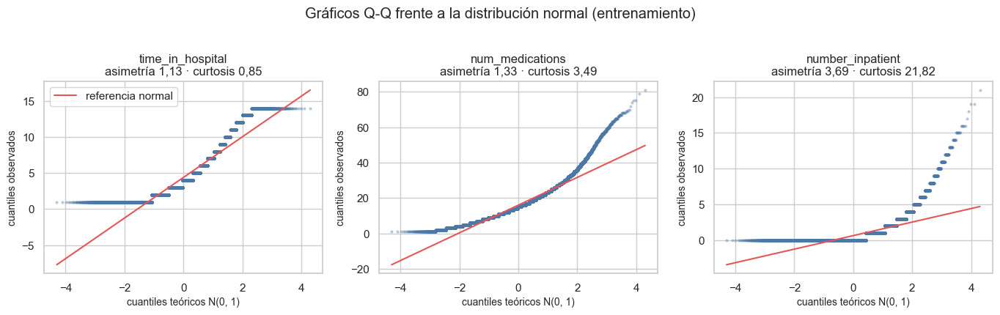
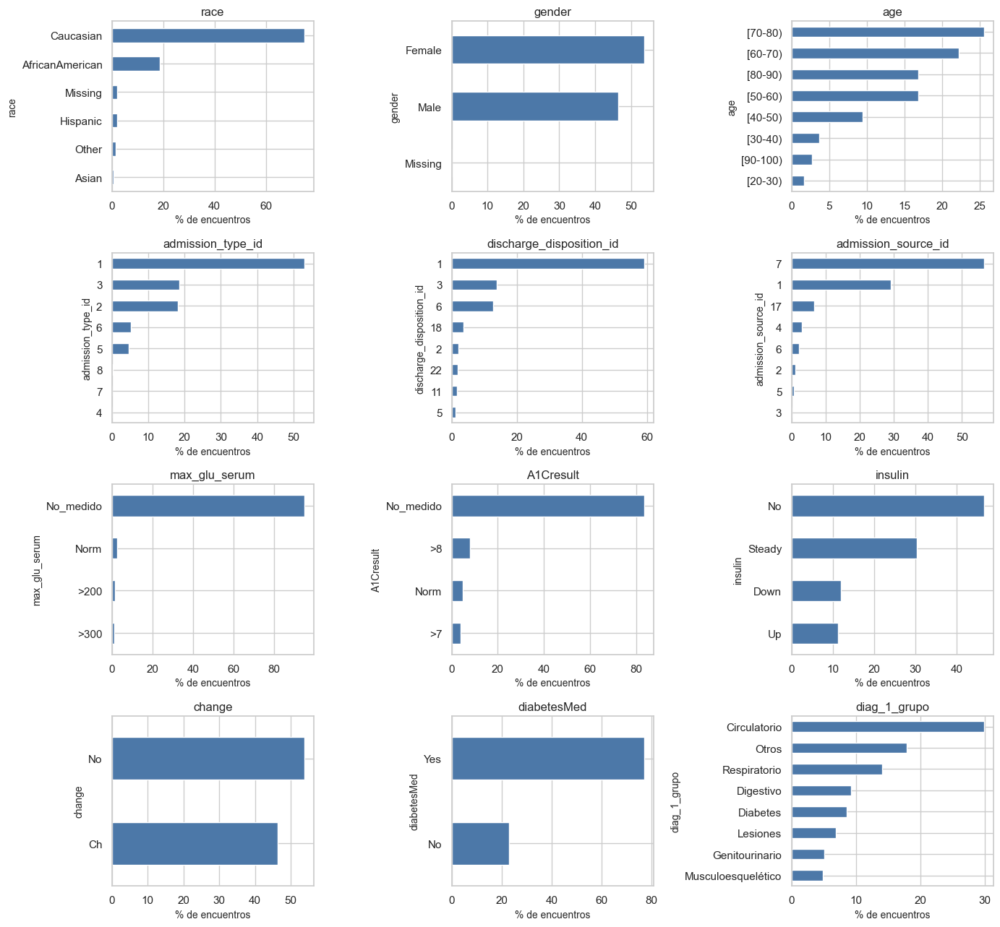
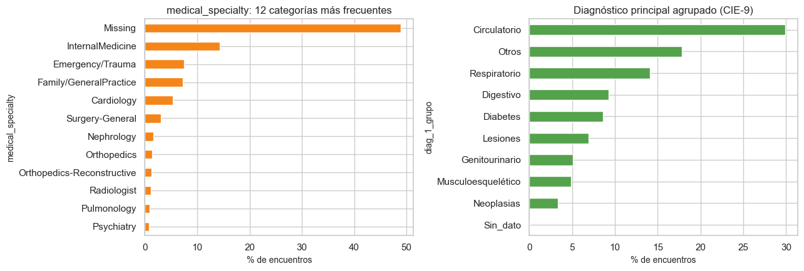

4. Análisis univariado#
Qué hacemos: describir cada variable por separado, según su tipo. Numéricas: media, mediana, desviación, percentiles, IQR, asimetría, curtosis, valores atípicos, histogramas y diagramas de caja. Categóricas: cardinalidad, frecuencias, categorías raras y faltantes.
Por qué: las decisiones de preprocesamiento (transformaciones, agrupación de categorías, codificación) salen de aquí. Todo usa solo el conjunto de entrenamiento.
from pathlib import Path
import re, sys, warnings
import numpy as np
import pandas as pd
import matplotlib.pyplot as plt
import seaborn as sns
from IPython.display import Markdown, display
project_root = Path.cwd().resolve()
while not (project_root / "_config.yml").exists():
if project_root.parent == project_root:
raise FileNotFoundError("No se encontró _config.yml. Ejecuta el notebook dentro de la carpeta del libro.")
project_root = project_root.parent
if str(project_root) not in sys.path:
sys.path.insert(0, str(project_root))
for _folder in ("tables", "figures"): # se crean si no existen
(project_root / _folder).mkdir(exist_ok=True)
from src.project_utils import *
configure_plots()
pd.set_option("display.max_columns", 80)
pd.set_option("display.width", 170)
pd.set_option("display.max_colwidth", 70)
TABLES = project_root / "tables"
def md_out(text):
display(Markdown(text))
train = load_train()
frame = prepare_frame(train)
num_cols, cat_cols = column_types(frame)
y = frame[TARGET]
Variables numéricas#
Además de las ocho variables de conteo, se agrega age_mid, el punto medio del rango de edad ([50-60) → 55). Los identificadores
codificados (tipo de ingreso, destino al alta y origen del ingreso) se tratan como categorías, no como cantidades.
resumen_num = numeric_summary(frame[num_cols])
resumen_num.to_csv(TABLES / "estadisticas_numericas.csv")
display(resumen_num.round(2))
sesgadas = resumen_num["asimetría"].sort_values(ascending=False)
ceros = resumen_num["ceros_%"].sort_values(ascending=False)
asim = sesgadas[sesgadas > 1]
muchos_ceros = ceros[ceros > 30]
md_out(f"- Variables con asimetría > 1: {', '.join(f'**{v}** ({es(asim[v], 2)})' for v in asim.index) if len(asim) else 'ninguna'}.\n"
f"- Variables con más de 30 % de ceros: {', '.join(f'**{v}** ({es(muchos_ceros[v], 1)} %)' for v in muchos_ceros.index) if len(muchos_ceros) else 'ninguna'}.\n\n"
+ ("Son variables de conteo con **cola larga hacia la derecha**: la mayoría de los pacientes tiene valores bajos y unos pocos valores muy altos. "
"Esto sugiere una transformación logarítmica (se decide en el capítulo 8)." if len(asim) else
"Ninguna requiere transformación por asimetría."))
| count | faltantes | faltantes_% | media | mediana | desv_est | mínimo | p01 | p25 | p50 | p75 | p99 | máximo | IQR | asimetría | curtosis | ceros_% | únicos | outliers_IQR_% | |
|---|---|---|---|---|---|---|---|---|---|---|---|---|---|---|---|---|---|---|---|
| time_in_hospital | 81413 | 0 | 0.0 | 4.40 | 4.0 | 2.99 | 1.0 | 1.0 | 2.0 | 4.0 | 6.0 | 14.0 | 14.0 | 4.0 | 1.13 | 0.85 | 0.00 | 14 | 2.22 |
| num_lab_procedures | 81413 | 0 | 0.0 | 43.08 | 44.0 | 19.69 | 1.0 | 1.0 | 31.0 | 44.0 | 57.0 | 85.0 | 132.0 | 26.0 | -0.23 | -0.25 | 0.00 | 116 | 0.15 |
| num_procedures | 81413 | 0 | 0.0 | 1.34 | 1.0 | 1.70 | 0.0 | 0.0 | 0.0 | 1.0 | 2.0 | 6.0 | 6.0 | 2.0 | 1.32 | 0.86 | 45.80 | 7 | 4.87 |
| num_medications | 81413 | 0 | 0.0 | 16.03 | 15.0 | 8.14 | 1.0 | 3.0 | 10.0 | 15.0 | 20.0 | 43.0 | 81.0 | 10.0 | 1.33 | 3.49 | 0.00 | 75 | 2.52 |
| number_outpatient | 81413 | 0 | 0.0 | 0.37 | 0.0 | 1.27 | 0.0 | 0.0 | 0.0 | 0.0 | 0.0 | 5.0 | 42.0 | 0.0 | 8.82 | 145.60 | 83.57 | 37 | 16.43 |
| number_emergency | 81413 | 0 | 0.0 | 0.20 | 0.0 | 0.96 | 0.0 | 0.0 | 0.0 | 0.0 | 0.0 | 3.0 | 76.0 | 0.0 | 24.19 | 1269.21 | 88.86 | 32 | 11.14 |
| number_inpatient | 81413 | 0 | 0.0 | 0.64 | 0.0 | 1.27 | 0.0 | 0.0 | 0.0 | 0.0 | 1.0 | 6.0 | 21.0 | 1.0 | 3.69 | 21.82 | 66.48 | 21 | 6.95 |
| number_diagnoses | 81413 | 0 | 0.0 | 7.42 | 8.0 | 1.94 | 1.0 | 2.0 | 6.0 | 8.0 | 9.0 | 9.0 | 16.0 | 3.0 | -0.88 | -0.07 | 0.00 | 16 | 0.28 |
| age_mid | 81413 | 0 | 0.0 | 65.97 | 65.0 | 15.95 | 5.0 | 25.0 | 55.0 | 65.0 | 75.0 | 95.0 | 95.0 | 20.0 | -0.64 | 0.30 | 0.00 | 10 | 0.86 |
Variables con asimetría > 1: number_emergency (24,19), number_outpatient (8,82), number_inpatient (3,69), num_medications (1,33), num_procedures (1,32), time_in_hospital (1,13).
Variables con más de 30 % de ceros: number_emergency (88,9 %), number_outpatient (83,6 %), number_inpatient (66,5 %), num_procedures (45,8 %).
Son variables de conteo con cola larga hacia la derecha: la mayoría de los pacientes tiene valores bajos y unos pocos valores muy altos. Esto sugiere una transformación logarítmica (se decide en el capítulo 8).
fig, axes = plt.subplots(3, 3, figsize=(13, 9))
for ax, c in zip(axes.ravel(), num_cols):
s = frame[c].dropna()
sns.histplot(s, discrete=s.nunique() <= 30, bins=40, ax=ax, color="#4c78a8")
ax.set_title(c); ax.set_xlabel("")
for ax in axes.ravel()[len(num_cols):]:
ax.axis("off")
plt.suptitle("Histogramas de las variables numéricas (entrenamiento)", y=1.01)
plt.tight_layout(); save_figure(fig, "04_histogramas_numericas.png"); plt.show()

fig, axes = plt.subplots(3, 3, figsize=(13, 7))
for ax, c in zip(axes.ravel(), num_cols):
sns.boxplot(x=frame[c], ax=ax, color="#9ecae9", fliersize=1.5)
ax.set_title(c); ax.set_xlabel("")
for ax in axes.ravel()[len(num_cols):]:
ax.axis("off")
plt.suptitle("Diagramas de caja (los puntos son valores atípicos por la regla del IQR)", y=1.01)
plt.tight_layout(); save_figure(fig, "04_boxplots_numericas.png"); plt.show()

¿Siguen una distribución normal? (pruebas de normalidad, con cautela)#
El enunciado pide pruebas de normalidad cuando sean relevantes. Aquí no se usan como criterio de decisión: con más de 80.000 encuentros de entrenamiento, pruebas como Shapiro–Wilk, D’Agostino–Pearson o Kolmogorov–Smirnov rechazan la normalidad ante desviaciones mínimas y sin relevancia práctica (el p-valor refleja sobre todo el tamaño de la muestra). Además, son variables de conteo discretas, que por construcción no pueden ser normales. Por eso la forma de cada distribución se juzga con la asimetría, la curtosis (tabla anterior) y con gráficos: los histogramas, los diagramas de caja y los gráficos Q-Q frente a la normal que se muestran a continuación. Ningún método del libro (regresión logística, bootstrap, pruebas no paramétricas) exige normalidad de las predictoras.
from scipy import stats as st
qq_vars = [c for c in ["time_in_hospital", "num_medications", "number_inpatient"] if c in frame.columns]
fig, axes = plt.subplots(1, len(qq_vars), figsize=(4.6 * len(qq_vars), 4.2))
for ax, c in zip(np.atleast_1d(axes), qq_vars):
s = frame[c].dropna().to_numpy()
(osm, osr), (pendiente, intercepto, _) = st.probplot(s, dist="norm")
ax.plot(osm, osr, "o", ms=2, alpha=0.3, color="#4c78a8", rasterized=True)
ax.plot(osm, pendiente * osm + intercepto, color="#e45756", lw=1.5, label="referencia normal")
ax.set_title(f"{c}\nasimetría {es(pd.Series(s).skew(), 2)} · curtosis {es(pd.Series(s).kurt(), 2)}")
ax.set_xlabel("cuantiles teóricos N(0, 1)"); ax.set_ylabel("cuantiles observados")
np.atleast_1d(axes)[0].legend(loc="upper left")
plt.suptitle("Gráficos Q-Q frente a la distribución normal (entrenamiento)", y=1.02)
plt.tight_layout(); save_figure(fig, "04_qqplots_numericas.png"); plt.show()
md_out("**Interpretación.** Ninguna de las tres sigue la recta: los escalones horizontales son propios de conteos discretos. "
"`time_in_hospital` está acotada entre 1 y 14 días, por lo que ambos extremos se aplanan; `num_medications` se ajusta en el centro, "
"pero su cola derecha es más pesada que la normal; `number_inpatient` se concentra en 0 y tiene una cola derecha muy larga "
"(asimetría y curtosis altas). Esto confirma lo que muestran asimetría y curtosis y motiva evaluar `log1p` en la sección siguiente.")

Interpretación. Ninguna de las tres sigue la recta: los escalones horizontales son propios de conteos discretos. time_in_hospital está acotada entre 1 y 14 días, por lo que ambos extremos se aplanan; num_medications se ajusta en el centro, pero su cola derecha es más pesada que la normal; number_inpatient se concentra en 0 y tiene una cola derecha muy larga (asimetría y curtosis altas). Esto confirma lo que muestran asimetría y curtosis y motiva evaluar log1p en la sección siguiente.
¿Ayuda la transformación logarítmica?#
Se compara la asimetría de cada variable antes y después de aplicar log1p (logaritmo de 1 + x, definido en cero). La decisión
formal se toma en el capítulo 8 con validación cruzada.
cand = resumen_num[resumen_num["asimetría"].abs() > 1].index.tolist()
comparacion = pd.DataFrame({
"asimetría original": [frame[c].skew() for c in cand],
"asimetría con log1p": [np.log1p(frame[c].clip(lower=0)).skew() for c in cand]}, index=cand)
display(comparacion.round(2))
mejora = (comparacion["asimetría con log1p"].abs() < comparacion["asimetría original"].abs()).sum()
md_out(f"El logaritmo reduce la asimetría en **{mejora} de {len(cand)}** variables con |asimetría| > 1.")
| asimetría original | asimetría con log1p | |
|---|---|---|
| time_in_hospital | 1.13 | 0.10 |
| num_procedures | 1.32 | 0.52 |
| num_medications | 1.33 | -0.48 |
| number_outpatient | 8.82 | 2.75 |
| number_emergency | 24.19 | 3.69 |
| number_inpatient | 3.69 | 1.45 |
El logaritmo reduce la asimetría en 6 de 6 variables con |asimetría| > 1.
Variables categóricas#
Se resume, para cada una, cuántos niveles tiene, qué porcentaje falta, cuál es la categoría más frecuente y cuántas categorías son raras (menos de 1 % de las filas). Las de alta cardinalidad necesitan un tratamiento especial.
rows = []
for c in cat_cols:
s = frame[c]
vc = s.value_counts(dropna=True)
total = s.notna().sum()
rows.append({"variable": c, "niveles": s.nunique(dropna=True), "faltantes_%": 100 * s.isna().mean(),
"categoría principal": str(vc.index[0]) if len(vc) else "—",
"principal_%": 100 * vc.iloc[0] / total if len(vc) else np.nan,
"categorías < 1 %": int((vc / total < 0.01).sum())})
resumen_cat = pd.DataFrame(rows).sort_values("niveles", ascending=False).reset_index(drop=True)
resumen_cat.to_csv(TABLES / "resumen_categoricas.csv", index=False)
display(resumen_cat.round(1))
alta = resumen_cat[resumen_cat["niveles"] > 30]["variable"].tolist()
md_out(f"Variables de **alta cardinalidad** (más de 30 niveles): {', '.join(f'`{v}`' for v in alta) if alta else 'ninguna'}. "
"Los códigos de diagnóstico (`diag_1`, `diag_2`, `diag_3`) tienen cientos de niveles: se agrupan en categorías clínicas "
"(circulatorio, respiratorio, digestivo, diabetes, etc.) siguiendo la clasificación CIE-9. Los identificadores codificados y la "
"especialidad médica se tratan con una categoría «infrecuente» para los niveles raros.")
| variable | niveles | faltantes_% | categoría principal | principal_% | categorías < 1 % | |
|---|---|---|---|---|---|---|
| 0 | diag_3 | 759 | 1.4 | 250 | 11.5 | 740 |
| 1 | diag_2 | 721 | 0.4 | 276 | 6.7 | 697 |
| 2 | diag_1 | 695 | 0.0 | 428 | 6.8 | 673 |
| 3 | medical_specialty | 70 | 48.8 | InternalMedicine | 28.1 | 55 |
| 4 | discharge_disposition_id | 26 | 0.0 | 1 | 59.1 | 18 |
| 5 | admission_source_id | 17 | 0.0 | 7 | 56.4 | 11 |
| 6 | payer_code | 17 | 39.6 | MC | 52.9 | 8 |
| 7 | diag_3_grupo | 10 | 0.0 | Circulatorio | 29.7 | 0 |
| 8 | diag_1_grupo | 10 | 0.0 | Circulatorio | 29.9 | 1 |
| 9 | age | 10 | 0.0 | [70-80) | 25.6 | 2 |
| 10 | diag_2_grupo | 10 | 0.0 | Circulatorio | 31.2 | 1 |
| 11 | weight | 9 | 96.9 | [75-100) | 42.1 | 2 |
| 12 | admission_type_id | 8 | 0.0 | 1 | 52.9 | 3 |
| 13 | race | 5 | 2.2 | Caucasian | 76.7 | 1 |
| 14 | metformin | 4 | 0.0 | No | 80.4 | 1 |
| 15 | pioglitazone | 4 | 0.0 | No | 92.8 | 2 |
| 16 | max_glu_serum | 4 | 0.0 | No_medido | 94.8 | 0 |
| 17 | A1Cresult | 4 | 0.0 | No_medido | 83.3 | 0 |
| 18 | glyburide-metformin | 4 | 0.0 | No | 99.3 | 3 |
| 19 | insulin | 4 | 0.0 | No | 46.5 | 0 |
| 20 | repaglinide | 4 | 0.0 | No | 98.5 | 2 |
| 21 | miglitol | 4 | 0.0 | No | 100.0 | 3 |
| 22 | rosiglitazone | 4 | 0.0 | No | 93.8 | 2 |
| 23 | glyburide | 4 | 0.0 | No | 89.6 | 2 |
| 24 | nateglinide | 4 | 0.0 | No | 99.3 | 3 |
| 25 | chlorpropamide | 4 | 0.0 | No | 99.9 | 3 |
| 26 | glipizide | 4 | 0.0 | No | 87.5 | 2 |
| 27 | glimepiride | 4 | 0.0 | No | 94.9 | 2 |
| 28 | tolazamide | 3 | 0.0 | No | 100.0 | 2 |
| 29 | acarbose | 3 | 0.0 | No | 99.7 | 2 |
| 30 | metformin-rosiglitazone | 2 | 0.0 | No | 100.0 | 1 |
| 31 | diabetesMed | 2 | 0.0 | Yes | 77.0 | 0 |
| 32 | change | 2 | 0.0 | No | 53.7 | 0 |
| 33 | metformin-pioglitazone | 2 | 0.0 | No | 100.0 | 1 |
| 34 | tolbutamide | 2 | 0.0 | No | 100.0 | 1 |
| 35 | glimepiride-pioglitazone | 2 | 0.0 | No | 100.0 | 1 |
| 36 | acetohexamide | 2 | 0.0 | No | 100.0 | 1 |
| 37 | troglitazone | 2 | 0.0 | No | 100.0 | 1 |
| 38 | gender | 2 | 0.0 | Female | 53.6 | 0 |
| 39 | glipizide-metformin | 2 | 0.0 | No | 100.0 | 1 |
| 40 | citoglipton | 1 | 0.0 | No | 100.0 | 0 |
| 41 | examide | 1 | 0.0 | No | 100.0 | 0 |
Variables de alta cardinalidad (más de 30 niveles): diag_3, diag_2, diag_1, medical_specialty. Los códigos de diagnóstico (diag_1, diag_2, diag_3) tienen cientos de niveles: se agrupan en categorías clínicas (circulatorio, respiratorio, digestivo, diabetes, etc.) siguiendo la clasificación CIE-9. Los identificadores codificados y la especialidad médica se tratan con una categoría «infrecuente» para los niveles raros.
elegidas = [c for c in ["race", "gender", "age", "admission_type_id", "discharge_disposition_id", "admission_source_id",
"max_glu_serum", "A1Cresult", "insulin", "change", "diabetesMed", "diag_1_grupo"] if c in frame.columns]
fig, axes = plt.subplots(4, 3, figsize=(14, 13))
for ax, c in zip(axes.ravel(), elegidas):
(frame[c].astype("object").fillna("Missing").value_counts().head(8).iloc[::-1] / len(frame) * 100).plot.barh(ax=ax, color="#4c78a8")
ax.set_title(c); ax.set_xlabel("% de encuentros")
for ax in axes.ravel()[len(elegidas):]:
ax.axis("off")
plt.tight_layout(); save_figure(fig, "04_categoricas_principales.png"); plt.show()

top_esp = frame["medical_specialty"].astype("object").fillna("Missing").value_counts()
fig, axes = plt.subplots(1, 2, figsize=(13, 4.5))
(top_esp.head(12).iloc[::-1] / len(frame) * 100).plot.barh(ax=axes[0], color="#f58518")
axes[0].set_title("medical_specialty: 12 categorías más frecuentes"); axes[0].set_xlabel("% de encuentros")
(frame["diag_1_grupo"].value_counts().iloc[::-1] / len(frame) * 100).plot.barh(ax=axes[1], color="#54a24b")
axes[1].set_title("Diagnóstico principal agrupado (CIE-9)"); axes[1].set_xlabel("% de encuentros")
plt.tight_layout(); save_figure(fig, "04_especialidad_y_diagnostico.png"); plt.show()
md_out(f"`medical_specialty` tiene {es(frame['medical_specialty'].nunique(), 0)} niveles y {es(100 * frame['medical_specialty'].isna().mean(), 1)} % de faltantes; "
f"`diag_1` tiene {es(frame['diag_1'].nunique(), 0)} códigos distintos que se reducen a {frame['diag_1_grupo'].nunique()} grupos.")

medical_specialty tiene 70 niveles y 48,8 % de faltantes; diag_1 tiene 695 códigos distintos que se reducen a 10 grupos.
Medicamentos#
Son 23 columnas con cuatro valores (No, Steady, Up, Down): si el medicamento se administró y si su dosis cambió durante
la estancia. La mayoría casi nunca se usa.
meds = [c for c in frame.columns if set(frame[c].dropna().unique()) <= {"No", "Steady", "Up", "Down"} and frame[c].nunique() > 0]
uso = pd.DataFrame({"% con el medicamento (Steady/Up/Down)": [100 * (frame[c] != "No").mean() for c in meds],
"niveles": [frame[c].nunique() for c in meds]}, index=meds).sort_values("% con el medicamento (Steady/Up/Down)", ascending=False)
constantes = uso[uso["niveles"] <= 1].index.tolist()
casi = uso[(uso["% con el medicamento (Steady/Up/Down)"] < 1) & (uso["niveles"] > 1)].index.tolist()
display(uso.round(2))
md_out(f"- **Constantes** (un solo valor, sin información): {constantes if constantes else 'ninguna'}\n"
f"- **Casi constantes** (menos de 1 % de uso): {len(casi)} medicamentos\n"
f"- Los más usados son {', '.join(f'**{v}** ({es(uso.iloc[i, 0], 1)} %)' for i, v in enumerate(uso.index[:3]))}; el resto tiene poca variación.\n\n"
"Las constantes se eliminan; las casi constantes se conservan pero sus niveles raros se agrupan como «infrecuente».")
| % con el medicamento (Steady/Up/Down) | niveles | |
|---|---|---|
| insulin | 53.48 | 4 |
| metformin | 19.59 | 4 |
| glipizide | 12.48 | 4 |
| glyburide | 10.38 | 4 |
| pioglitazone | 7.22 | 4 |
| rosiglitazone | 6.25 | 4 |
| glimepiride | 5.09 | 4 |
| repaglinide | 1.55 | 4 |
| nateglinide | 0.70 | 4 |
| glyburide-metformin | 0.67 | 4 |
| acarbose | 0.30 | 3 |
| chlorpropamide | 0.09 | 4 |
| tolazamide | 0.04 | 3 |
| miglitol | 0.03 | 4 |
| tolbutamide | 0.03 | 2 |
| glipizide-metformin | 0.01 | 2 |
| troglitazone | 0.00 | 2 |
| acetohexamide | 0.00 | 2 |
| glimepiride-pioglitazone | 0.00 | 2 |
| metformin-rosiglitazone | 0.00 | 2 |
| metformin-pioglitazone | 0.00 | 2 |
| examide | 0.00 | 1 |
| citoglipton | 0.00 | 1 |
Constantes (un solo valor, sin información): [‘examide’, ‘citoglipton’]
Casi constantes (menos de 1 % de uso): 13 medicamentos
Los más usados son insulin (53,5 %), metformin (19,6 %), glipizide (12,5 %); el resto tiene poca variación.
Las constantes se eliminan; las casi constantes se conservan pero sus niveles raros se agrupan como «infrecuente».